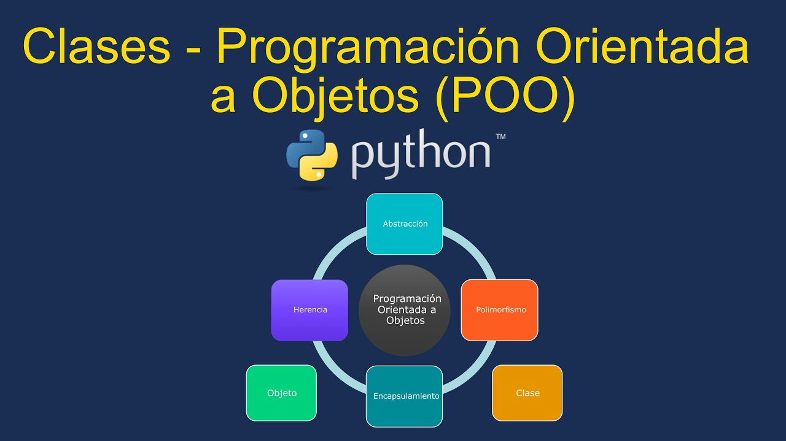

UT 4 - Programación orientada a objetos

Resultados de aprendizaje y criterios de evaluacion que se evaluarán en esta unidad.
| RA2. Escribe y prueba programas sencillos, reconociendo y aplicando los fundamentos de la programación orientada a objetos. |
|---|
| a) Se han identificado los fundamentos de la programación orientada a objetos. |
| c) Se han instanciado objetos a partir de clases predefinidas. |
| d) Se han utilizado métodos y propiedades de los objetos. |
| e) Se han escrito llamadas a métodos estáticos. |
| f) Se han utilizado parámetros en la llamada a métodos. |
| RA4. Desarrolla programas organizados en clases analizando y aplicando los principios de la programación orientada a objetos. |
|---|
| a) Se ha reconocido la sintaxis, estructura y componentes típicos de una clase. |
1 - Introducción a la programación orientada a objetos
La Programación Orientada a Objetos (POO) (Object-Oriented Programming (OOP) en inglés) es un paradigma de programación que surgió en los años 1970.
Este enfoque permite organizar el código en clases y objetos, de forma que el diseño del software se asemeje al modo en que representamos los elementos del mundo real.
Cada clase define las características (atributos) y los comportamientos (métodos) de un tipo de objeto.
De esta forma, la POO permite modelar entidades y sus relaciones de forma modular, reutilizable y mantenible.
Ejemplo: Objeto “Coche”
Atributos:
- color
- ruedas
- peso
- tamaño
Métodos:
- arrancar()
- frenar()
- acelerar()
- girar()
2 - Principios básicos de la POO
La programación orientada a objetos está basada en 6 principios o pilares básicos:
- Abstracción
- Encapsulamiento
- Herencia
- Polimorfismo
- Cohesión
- Acoplamiento
2.1 - Abstracción
La abstracción consiste en representar los aspectos esenciales de un objeto, ocultando los detalles innecesarios. En otras palabras, se centra en qué hace un objeto y no cómo lo hace.
Ejemplo:
Al conducir un coche, no se necesita saber cómo funciona el motor, solo se usan los pedales y el volante.
En código, se define una clase con métodos como arrancar() o frenar() sin necesidad de mostrar su implementación interna.
2.2 - Encapsulamiento
El encapsulamiento consiste en proteger los datos de un objeto para evitar que se acceda o modifique su estado directamente desde fuera de la clase. Los atributos suelen declararse como privados o protegidos, y se accede a ellos mediante métodos públicos llamados getters y setters.
Ejemplo:
class Coche:
def __init__(self):
self.__velocidad = 0 # atributo privado
def acelerar(self):
self.__velocidad += 10
def obtener_velocidad(self):
return self.__velocidad
2.3 - Herencia
La herencia permite que una clase herede atributos y métodos de otra clase. Esto facilita la reutilización del código y la creación de jerarquías de clases.
Ejemplo:
En este ejemplo vemos como la clase Coche hereda el atributo color de Vehiculo.
class Vehiculo:
def __init__(self, color):
self.color = color
class Coche(Vehiculo):
def __init__(self, color, modelo):
super().__init__(color)
self.modelo = modelo
2.4 - Polimorfismo
El polimorfismo permite que un mismo método tenga distintos comportamientos según el objeto que lo invoque. En Python, esto se logra mediante la sobrescritura de métodos o el uso de métodos con el mismo nombre en diferentes clases.
Ejemplo:
En este ejemplo vemos como las clases Perro y Gato heredan de animal
class Coches:
def acelerar(self):
pass
class Coupe(Coches):
def acelerar(self):
return "¡Acelerando a tope!"
class Sedan(Coches):
def acelerar(self):
return "Acelerando con calma"
for coche in [Coupe(), Sedan()]:
print(coche.acelerar())
2.5 - Cohesión
La cohesión mide cuán relacionadas están las responsabilidades dentro de una clase. Una clase altamente cohesionada tiene una única responsabilidad bien definida, lo que facilita su mantenimiento, reutilización y comprensión.
Ejemplo:
Una clase GestorCoches debería encargarse únicamente de gestionar las características de los coches, no de manejar información de camiones o motocicletas.
La alta cohesión mejora la legibilidad del código y reduce errores, siguiendo el principio de una clase, una responsabilidad.
2.6 - Acoplamiento
El acoplamiento mide el grado de dependencia entre las clases o módulos. En la POO se busca un bajo acoplamiento, es decir, que las clases dependan lo menos posible unas de otras.
Ejemplo:
Cuando una clase Concesionario necesita obtener información de un Coche, no debe acceder directamente a sus atributos internos, sino hacerlo mediante un método (público) que proporcione esos datos.
class Coche:
def obtener_modelo(self):
return "Toyota Corolla"
class Concesionario:
def __init__(self, coche):
self.coche = coche
def mostrar_coche(self):
print(self.coche.obtener_modelo())
# Ejemplo de uso
mi_coche = Coche()
concesionario = Concesionario(mi_coche)
concesionario.mostrar_coche()
3 - Creación y uso de un objeto
En la Programación Orientada a Objetos (POO), una clase representa la abstracción: el modelo o plantilla que describe cómo serán los objetos.
Cuando creamos un objeto a partir de una clase, estamos generando una instancia concreta de esa abstracción.
3.1 - Crear una clase
Una clase es como un molde o plantilla que define cómo serán los objetos que creemos a partir de ella. Dentro de una clase se especifican sus atributos (las características) y sus métodos (las acciones que puede realizar).
Ejemplo:
class Coche:
# Atributos de la clase
def __init__(self, marca, modelo, color):
self.marca = marca
self.modelo = modelo
self.color = color
self.ruedas = 4
self.abs_serie = True
# Metodos de la clase
def arrancar(self):
print("El coche está arrancando.")
def acelerar(self):
print("El coche está acelerando.")
def frenar(self):
print("El coche está frenando.")
def girar(self):
print("El coche está girando.")
-
Método constructor init()
El método init(), es el constructor de la clase (Coche).
Se ejecuta automáticamente cada vez que se crea una nueva instancia (crea un nuevo objeto) de la clase (Coche).
Su función es inicializar los atributos del objeto con los valores que se le pasan al crear la instancia. -
Parámetro self
El parámetro self es el primer parámetro obligatorio de todos los métodos de instancia dentro de una clase (en Python).
Representa al objeto actual (la instancia) que está utilizando el método.
Gracias a self, la clase puede acceder y modificar sus propios atributos. Por convención se llama self, aunque podría llarmarse de cualquier otra forma, pero se recomienda mantener esta convención.
3.2 - Instanciar una clase y usar métodos
Una vez definida la clase, podemos crear objetos (también llamados instancias) a partir de ella. Cada objeto es independiente, aunque comparta la misma estructura y métodos definidos en la clase.
Ejemplo
# Crear (instanciar) un objeto de la clase Coche
mi_coche = Coche("Toyota", "Corolla", "Rojo")
# Usar los métodos del objeto
mi_coche.arrancar()
mi_coche.acelerar()
mi_coche.frenar()
mi_coche.girar()
Podemos crear tantos objetos como necesitamos.
Cada objeto mantiene sus propios valores de atributos y no afecta a los demás.
coche1 = Coche("Ford", "Focus", "Blanco")
coche2 = Coche("Honda", "Civic", "Gris")
coche2 = Coche("Toyota", "Corolla", "Verde")
print(coche1.marca, coche1.color)
print(coche2.marca, coche2.color)
print(coche3.marca, coche3.color)
3.3 - Acceder a los atributos del objeto
Los atributos definidos dentro del método init() pueden consultarse o modificarse directamente a través del nombre del objeto seguido de un punto (.):
print(mi_coche.marca) # Muestra la marca del coche
print(mi_coche.color) # Muestra el color del coche
print(mi_coche.ruedas) # Muestra el número de ruedas
¡Si no tomamos las medidas oportunas, podremos modificarlos los atributos del objeto desde fuera de la clase!
3.4 - Tarea RA2-CEac
Ejercicio 1
Realizar un programa que conste de lo siguiente:
- Una clase llamada Estudiante, que tenga como atributos el nombre y la nota del alumno.
- La clase tendrá los métodos para inicializar sus atributos, imprimirlos por terminal y mostrar un mensaje con el resultado de la nota y si ha aprobado o no.
- Contruir 2 objetos (utilizar los inputs necesarios) e instanciar sus clases.
Ejercicio 2
Realizar un programa que conste de lo siguiente:
- Una clase llamada calculadora. que tendrá, entre otros los métodos sumar, restar, multiplicar y dividir.
- El código necesario para que el usuario pueda introducir 2 valores enteros.
- El código necesario para imprimir la suma, resta, multiplicación y división de los 2 valores.
- Si el usuario ha introducido un valor nulo y no se puede realizar la división, el programa imprimirá por pantalla No se puede realizar la operación solicitada.
3.5 - Métodos de instancia, de clase y estáticos
Como hemos visto, los métodos son funciones incluidas dentro de la definición de una clase.
Existen tres tipos de métodos, que se diferencian en cómo se definen y a qué tienen acceso:
- Método de instancia: se utiliza cuando el método necesita acceder o modificar los datos específicos de un objeto (una instancia concreta de la clase).
- Método de clase: se utiliza cuando el método trabaja con datos que pertenecen a la clase en general, no a una instancia concreta (por ejemplo, atributos de clase compartidos).
- Método estático: se utiliza cuando el método no depende ni de los datos de instancia ni de los datos de clase. Realiza una operación independiente del estado del objeto o de la clase.
Métodos de instancia
Los métodos de instancia son métodos que actúan sobre las instancias de una clase. Tienen acceso a los atributos de esas instancias a través del parámetro self.
Son los métodos más comunes en Python y se definen dentro de una clase utilizando def.
Ejemplo
class Persona:
def __init__(self, nombre, edad):
self.nombre = nombre
self.edad = edad
def saludar(self):
return f"Hola, soy {self.nombre} y tengo {self.edad} años."
# Creación de instancia de persona
persona1 = Persona("Luis", 30)
# Llamada al método de instancia
print(persona1.saludar()) # Salida: Hola, soy Luis y tengo 30 años.
→ Utiliza self para acceder a los atributos nombre y edad de la instancia persona1.
Métodos de clase
Los métodos de clase son aquellos que actúan sobre la clase en sí, en lugar de hacerlo sobre las instancias individuales.
Se definen utilizando el decorador @classmethod y reciben como primer parámetro cls, que representa la propia clase y permite acceder o modificar sus atributos y métodos de clase.
class Coche:
# Atributo de clase (compartido por todas las instancias)
ruedas = 4
# Constructor
def __init__(self, marca, modelo, color):
self.marca = marca
self.modelo = modelo
self.color = color
self.abs_serie = True
# Métodos de instancia
def arrancar(self):
print("El coche está arrancando.")
def acelerar(self):
print("El coche está acelerando.")
def frenar(self):
print("El coche está frenando.")
def girar(self):
print("El coche está girando.")
# Método de clase
@classmethod
def cambiar_ruedas(cls, nuevas_ruedas):
cls.ruedas = nuevas_ruedas
print(f"Ahora todos los coches tienen {cls.ruedas} ruedas.")
# Intanciar el metodo de clase no el objeto
Coche.cambiar_ruedas(6)
# Crear nuevo objeto
mi_nuevo_coche = Coche
print("Ahora todos los coches de esa clase tendran", mi_nuevo_coche.ruedas,"ruedas")
Métodos estáticos
Los métodos estáticos son métodos que están relacionados con la clase, pero no necesitan acceder ni a los atributos de instancia ni a los atributos de clase. Se definen utilizando el decorador @staticmethod y no reciben los parámetros self ni cls, ya que no dependen del estado del objeto ni de la clase.
class Coche:
def __init__(self, marca, modelo, color, kilometros):
self.marca = marca
self.modelo = modelo
self.color = color
self.kilometros = kilometros
self.ruedas = 4
self.abs_serie = True
def arrancar(self):
print("El coche está arrancando.")
def acelerar(self):
print("El coche está acelerando.")
def frenar(self):
print("El coche está frenando.")
def girar(self):
print("El coche está girando.")
@staticmethod
def es_nuevo(kilometros):
if kilometros >= 10000:
return "de segunda mano"
elif kilometros > 500 and kilometros <10000:
return "semi nuevo"
else:
return "nuevo"
coche1 = Coche("Toyota", "Corolla", "gris", 0)
coche2 = Coche("Ford", "Focus", "rojo", 3000)
coche3 = Coche("Seat", "Ibiza", "azul", 15000)
Ejemplo con los 3 métodos
class Coche:
# Atributo de clase (compartido por todas las instancias)
ruedas = 4
def __init__(self, marca, modelo, color, kilometros = 0):
self.marca = marca
self.modelo = modelo
self.color = color
self.kilometros = kilometros
self.abs_serie = True
# Métodos de instancia
def arrancar(self):
print("El coche está arrancando.")
def acelerar(self):
print("El coche está acelerando.")
def frenar(self):
print("El coche está frenando.")
def girar(self):
print("El coche está girando.")
def mostrar_marca(self):
return f"Este coche es un {self.marca}"
# Método estático
@staticmethod
def es_nuevo(kilometros):
"""Devuelve el estado del coche según los kilómetros."""
if kilometros >= 10000:
return "de segunda mano"
elif 500 < kilometros < 10000:
return "semi nuevo"
else:
return "nuevo"
# Métodos de clase
@classmethod
def cambiar_ruedas(cls, nuevas_ruedas):
cls.ruedas = nuevas_ruedas
print(f"Ahora todos los coches tienen {cls.ruedas} ruedas.")
@classmethod
def crear_coche_predeterminado(cls):
"""Crea un coche con valores estándar."""
return cls("Toyota", "Corolla", "gris", 0)
# Ejemplo de uso
coche_1 = Coche("Toyota", "Corolla", "gris")
coche_2 = Coche("Ford", "Focus", "rojo", 8000)
# Método de instancia → depende del objeto
print(coche_1.mostrar_marca()) # "Este coche es un Toyota"
# Método de clase → afecta a la clase entera
Coche.cambiar_ruedas(6)
print(f"El coche coche_2 tiene {coche_2.ruedas} ruedas") # 6 (se actualizó para todas las instancias)
# Método estático → independiente de la clase o instancia
print("El coche 1 es", Coche.es_nuevo(coche_1.kilometros)) # nuevo
print("El coche 2 es",Coche.es_nuevo(coche_2.kilometros)) # semi nuevo
# Método de clase que crea un coche predefinido
coche_3 = Coche.crear_coche_predeterminado()
print(f"Coche 3 (predeterminado): {coche_3.marca}, {coche_3.modelo}, {coche_3.color}, {coche_3.kilometros} km")
3.6 - Tarea RA2-CEd
Conversor que permita convertir valores de tiempo
Crea una clase llamada Conversor que permita convertir valores de tiempo entre:
- Segundos → Horas, minutos y segundos (HH:MM:SS)
- Horas, minutos y segundos (HH:MM:SS) → Segundos
- El programa debe solicitar al usuario el tipo de conversión que desea realizar y los datos necesarios, mostrando el resultado por pantalla.
Guía para la creación del programa
- Clase principal: Conversor
- La clase debe incluir al menos tres métodos:
- Un método estático segundos_a_hms(segundos) que:
Reciba un número entero de segundos.
Devuelva una cadena en formato "HH:MM:SS".
- Un método de clase desde_hms(cls, horas, minutos, segundos) que:
Reciba tres enteros (horas, minutos, segundos).
Devuelva el total en segundos.
- Un método de instancia ejecutar_conversion() que:
Muestre un pequeño menú.
Use la estructura match para decidir qué tipo de conversión hacer.
Solicite al usuario los datos y muestre el resultado. - El programa debe realizar una sola conversión y terminar su ejecución.
- Se deben manejar errores de entrada con try y except para evitar que el programa se detenga ante datos incorrectos.
Ayuda para la introducción de datos
Para la introducción de los datos HMS se puede usar la función integrada map():
Ejemplo:
4 - Encapsulamiento en la POO y Python
Como podemos ver en el ejemplo siguiente, resulta muy fácil en python, modificar los atributos y acceder a los métodos de una clase desde el exterior.
# Definición de la clase
class Coche:
def __init__(self, marca, modelo, color):
# Atributos de instancia
self.marca = marca
self.modelo = modelo
self.color = color
self.velocidad = 0 # valor inicial
# Método para acelerar
def acelerar(self, cantidad):
self.velocidad += cantidad
print(f"El coche ha acelerado. Velocidad actual: {self.velocidad} km/h")
# Método para frenar
def frenar(self, cantidad):
self.velocidad = max(0, self.velocidad - cantidad)
print(f"El coche ha frenado. Velocidad actual: {self.velocidad} km/h")
# Método para mostrar información
def mostrar_info(self):
print(f"{self.marca} {self.modelo} ({self.color}) - {self.velocidad} km/h")
# Intancia y manipulación de atributos
# Crear un objeto (instancia de la clase)
mi_coche = Coche("Toyota", "Corolla", "Rojo")
# Acceder a los atributos
print(mi_coche.marca) # Toyota
print(mi_coche.color) # Rojo
# Modificar un atributo directamente
mi_coche.color = "Azul"
print(mi_coche.color) # Azul
# Usar métodos
mi_coche.mostrar_info() # Toyota Corolla (Azul) - 0 km/h
mi_coche.acelerar(50) # Acelera a 50 km/h
mi_coche.frenar(20) # Baja a 30 km/h
# Comprobar valores modificados
mi_coche.mostrar_info() # Toyota Corolla (Azul) - 30 km/h
El encapsulamiento consiste en hacer que los atributos y/o métodos internos a una clase no se puedan acceder ni modificar desde fuera. Sera solamente el propio objeto el que pueda acceder a ellos.
4.1 - Atributos y métodos privados
Los atributos y métodos que comienzan por un doble guión bajo '__' se consideran privados. Intentar modificarlos o instanciarlos lanzará un error.
class Coche:
def __init__(self, marca, modelo, color):
# Atributos de instancia
self.marca = marca
self.modelo = modelo
self.color = color
self.velocidad = 0 # valor inicial
self.__ruedas = 4
# Método para acelerar
def acelerar(self, cantidad):
self.velocidad += cantidad
print(f"El coche ha acelerado. Velocidad actual: {self.velocidad} km/h")
# Método para frenar
def frenar(self, cantidad):
self.velocidad = max(0, self.velocidad - cantidad)
print(f"El coche ha frenado. Velocidad actual: {self.velocidad} km/h")
# Método para mostrar información
def __mostrar_info(self):
print(f"{self.marca} {self.modelo} ({self.color}) - {self.velocidad} km/h")
# Intancia y manipulación de atributos
# Crear un objeto (instancia de la clase)
mi_coche = Coche("Toyota", "Corolla", "Rojo")
# Acceder a los atributos
print(mi_coche.marca) # Toyota
print(mi_coche.color) # Rojo
# Modificar un atributo directamente
mi_coche.color = "Azul"
print(mi_coche.color) # Azul
# Usar métodos
mi_coche.mostrar_info() # Toyota Corolla (Azul) - 0 km/h
mi_coche.acelerar(50) # Acelera a 50 km/h
mi_coche.frenar(20) # Baja a 30 km/h
# Comprobar valores modificados
mi_coche.mostrar_info() # Toyota Corolla (Azul) - 30 km/h
# Acceder a un atributo o un método de instancia encapsulado
mi_coche.__mostrar_info() # Esta linea producirá un error
print(mi_coche.__ruedas) # Esta linea producirá un error
4.2 - Modificadores de atributos privados con métodos getters y setters
Muy habituales en otros lenguajes de programación (Java, C#) los métodos getters y setters no se recomiendan en python.
class Persona:
def __init__(self, nombre, edad):
self.__nombre = nombre
self.__edad = edad
# Setter para nombre
def set_nombre(self, nuevo_Nombre):
self.__nombre = nuevo_Nombre
# Getter para nombre
def get_nombre(self):
return self.__nombre
# --- Uso del objeto ---
persona = Persona("Ana", 25)
# Acceso mediante metodos
#print("Edad de la persona", persona.__edad) # Producira un error
#print("Nombre de la persona", persona.__nombre) # Producira un error
# Modificar mediante getters
persona.set_nombre("Arturo")
# Acceder mediante setters
print("Nuevo nombre de la persona:", persona.get_nombre())
En Python no se recomienda usar getters y setters tradicionales (como get_Nombre() o set_Nombre()) porque van en contra de la filosofía del lenguaje que apuesta por la simplicidad y la legibilidad.
Python confía en el programador y no impone un control estricto sobre los atributos.
Si se necesita validar o controlar el acceso, puede hacerse usando los decoradores @property y @
4.3 - Decoradores @propiedad y @.setter para atributos y métodos privados
En Python, los decoradores @property y @
-
@property
Convierte un método en un “getter”, de manera que se pueda acceder a él como si fuera un atributo. -
@
.setter
Se utiliza junto a @property para definir un “setter”, es decir, cómo se modifica un atributo.
4.3.1 - Atributos
Ejemplo anterior modificado
class Persona:
def __init__(self, nombre, edad):
self.__nombre = nombre
self.__edad = edad
# Getter para nombre
@property
def nombre(self):
return self.__nombre
# Setter para nombre
@nombre.setter
def nombre(self, nuevo_nombre):
self.__nombre = nuevo_nombre
# --- Uso del objeto ---
persona = Persona("Ana", 25)
# Modificar usando el setter
persona.nombre = "Arturo"
# Acceder usando el getter
print("Nuevo nombre de la persona:", persona.nombre)
4.3.2 - Métodos privados
class Cuenta:
def __init__(self, saldo):
self.__saldo = saldo # atributo privado
# Método privado que devuelve el saldo
def __obtener_saldo(self):
return self.__saldo
# Método privado que fija el saldo
def __fijar_saldo_inicial(self, nuevo_saldo):
self.__saldo = nuevo_saldo
# Getter de la propiedad
@property
def visualizar_saldo(self):
return self.__obtener_saldo()
# Setter de la propiedad
@visualizar_saldo.setter
def visualizar_saldo(self, nuevo_saldo):
self.__fijar_saldo_inicial(nuevo_saldo)
# --- Uso del objeto ---
cuenta = Cuenta(100)
print("Saldo inicial:", cuenta.visualizar_saldo) # 100
cuenta.visualizar_saldo = 80 # usar el setter
print("Saldo actualizado:", cuenta.visualizar_saldo) # 80
4.4 - Tarea RA2-CEe
Teneís el siguiente programa:
class Limon:
def __init__(self, peso=200):
self.__peso = peso
@property
def peso(self):
return print("El valor de __peso es =:",self.__peso)
@peso.setter
def peso(self, nuevo_peso):
self.__peso = nuevo_peso
Ampliar el programa para que la ejecución devuelva en la terminal el siguiente log:
Empezamos el programa
---------------------
Pulsar intro para continuar...
Voy a instanciar la clase Limon con limon = Limon(peso)
Tambien puede hacerlo con limon = Limon(), entonces me asignara por defecto peso=200
Antes de todo pediré por consola el peso del limón
---------------------
Pulsar intro para instanciar la clase limón
---------------------
Introducir el peso del limon: 212
Estoy en el método construtor __init__ y me han pasado el valor peso = 212
Pulsar intro para seguir
---------------------
El atributo estático __peso ya tiene el valor de peso = 212
Pulsar intro para seguir
---------------------
Con isinstance(objeto, clase), podemos verificar que el objeto creado pertenece a la clase correcta
Pulsar intro para continuar...
---------------------
¿Pertenece limon a la clase Limon? → True
Pulsar intro para continuar...
---------------------
Tenemos a nuestra disposicion el objeto 'limon'
Pulsar intro para continuar...
---------------------
Vamos a obtener el valor de __peso
Pulsar intro para continuar...
---------------------
Con el método peso con decorador @property obtendremos el valor de __peso
Pulsar intro para continuar...
---------------------
Pulsar intro para instanciar limon.peso
Estoy dentro de property (getter) pero aún no he hecho nada
Pulsar intro para seguir...
El valor de __peso dentro de @property es: 212
Pulsar intro para seguir...
Voy a devolver el valor de __peso
El valor de __peso fuera de la clase es: 212
Pulsar intro para continuar...
---------------------
Con el método peso con decorador @peso.setter modificaremos el valor de __peso
Pulsar intro para continuar...
Introducir el nuevo peso del limon: 258
Estoy dentro de @peso.setter pero aun no he hecho nada
Pulsar intro para continuar...
El valor de __peso dentro de @peso.setter antes de hacer anda es: 212
Pulsar intro para continuar...
---------------------
Acabo de modificar el valor de __peso a: 258
---------------------
Fin del programa
5 - Herencia en python
- La herencia permite crear nuevas clases basadas en clases ya existentes.
- La nueva clase (subclase) hereda los atributos y métodos de la clase base (superclase) y puede agregar sus propios atributos y métodos o sobrescribir los ya definidos. De esta forma, la subclase puede extender o modificar el comportamiento de la superclase.
Conceptos importanes
- Superclase (clase padre): Es la clase de la cual se heredan los métodos y atributos.
- Subclase (clase hija): Es la clase que hereda métodos y atributos de la superclase.
- super(): Función que permite acceder a los métodos y atributos de la superclase desde la subclase
5.1 - Herencia simple
Sintáxis básica
class Superclase:
# Definición de la clase base
pass
class Subclase(Superclase):
# Definición de la subclase
pass
Ejemplo práctico
# Clase padre
class Persona:
def __init__(self, nombre, edad):
self.nombre = nombre
self.edad = edad
def mostrar(self):
return self.nombre + ", " + str(self.edad) + " años"
# Otros métodos...
# Clase hija
class Programador(Persona):
def __init__(self, nombre, edad, lenguaje):
super().__init__(nombre, edad)
self.lenguaje = lenguaje
def mostrar(self):
return super().mostrar() + "\nPrograma en " + self.lenguaje
persona_1 = Programador("Pedro", 28,"Python")
print(persona_1.mostrar())
Puntos clave
- Si una subclase no redefine el constructor (init()), usará automáticamente el de la superclase.
- Se puede sobrescribir cualquier método heredado simplemente volviéndolo a definir en la subclase.
- super() permite acceder a métodos o atributos de la superclase, incluso cuando están sobrescritos.
- Python admite herencia múltiple, es decir, una clase puede heredar de más de una superclase:
5.2 - Herencia multiple
Python permite que una clase herede de más de una superclase. Esto significa que una subclase puede combinar el comportamiento de varias clases base.
Sintáxis básica
Ejemplo práctico
# Clase base 1
class Persona:
def __init__(self, nombre, dni):
self.nombre = nombre
self.dni = dni
def mostrar(self):
return f"Nombre: {self.nombre} con DNI: {self.dni}"
# Clase base 2
class Trabajador:
def __init__(self, perfil):
self.perfil = perfil
def mostrar_puesto_trabajo(self):
return f"Puesto: {self.perfil}"
# Clase hija que hereda de Persona y Trabajador
class Empleado(Persona, Trabajador):
def __init__(self, nombre, dni, perfil, salario):
# Llamadas a los constructores de ambas superclases
Persona.__init__(self, nombre, dni)
Trabajador.__init__(self, perfil)
self.salario = salario
def mostrar(self):
# Combina los métodos heredados
return f"{super().mostrar()} | {self().mostrar_puesto_trabajo()} | Salario: {self.salario}€"
# Uso de la clase
nuevo_empleado = Empleado("Carlos", "22656198Y", "Desarrollador", 2800)
print(nuevo_empleado.mostrar())
Explicación de return f"{super().mostrar()} | {self().mostrar_puesto_trabajo()} | Salario: {self.salario}€"
super() devuelve una referencia al siguiente método en el orden de resolución de métodos MRO (method resolution order).
Cuando una clase hereda de varias clases padre, el MRO decide qué método se ejecuta si hay un conflicto, es decir, si varios padres tienen un método con el mismo nombre. En este caso el método está sobrescrito así que la llamada se hace al método original.Cuando usamos self, Python busca el método en la propia instancia (siguiendo también el orden MRO).
Queremos simplemente llamar al método heredado tal cual.5.3 - Tarea - RA2-CEf
Ejercicio 1
Herencia simple. En este ejercicio se creará una clase base Vehiculo y una clase hija Coche.
-
La clase Vehiculo debe tener:
Atributos: marca, modelo
Método mostrar() que devuelva: "Vehículo: marca modelo" -
La clase Coche hereda de Vehiculo y añade:
Atributo: num_puertas
Método mostrar() que utilice el de la superclase y añada " | Puertas: X" -
Crear dos objetos Coche distintos y mostrarlos con print(obj.mostrar()).
Ejemplo de salida
Ejercicio 2
Herencia multiple. En este ejercicio se creará una clase Persona, otra Estudiante y una clase hija Becado que herede de ambas.
-
Clase Persona:
Atributos: nombre, edad
Método mostrar() → "Nombre: ___ | Edad: ___" -
Clase Estudiante:
Atributo: carrera
Método mostrar_estudios() → "Carrera: ___" -
La clase Becado hereda de Persona y Estudiante, y añade:
Atributo: importe_beca
Método mostrar() que combine:
super().mostrar() (de Persona)
self.mostrar_estudios() (de Estudiante)
Beca: "___ €" al final -
Crear un objeto Becado y mostrarlo usando print(obj.mostrar()).
Ejemplo de salida
5 - Polimorfismo en python
A diferencia de la herencia, que establece una relación jerárquica entre clases, el polimorfismo se refiere a la capacidad de distintos objetos de responder al mismo método de manera diferente según su clase. En Python, el polimorfismo se facilita gracias al tipado dinámico y al duck typing, lo que significa que lo importante no es el tipo concreto del objeto, sino que implemente los métodos necesarios para el comportamiento esperado.
Ejemplo básico
class Coche():
cantidad_ruedas = 4
def __init__(self, marca, modelo):
self.marca = marca
self.modelo = modelo
def descripcion(self):
return f"Coche: {self.marca} {self.modelo}"
def ruedas(self):
return f"El coche tiene {self.cantidad_ruedas} ruedas."
class Moto():
cantidad_ruedas = 2
def __init__(self, marca, modelo):
self.marca = marca
self.modelo = modelo
def descripcion(self):
return f"Moto: {self.marca} {self.modelo}"
def ruedas(self):
return f"La moto tiene {self.cantidad_ruedas} ruedas."
class Camion():
cantidad_ruedas = 6
def __init__(self, marca, modelo):
self.marca = marca
self.modelo = modelo
def descripcion(self):
return f"Camión: {self.marca} {self.modelo}"
def ruedas(self):
return f"El camión tiene {self.cantidad_ruedas} ruedas."
def cantidad_ruedas(vehiculo):
return vehiculo.ruedas()
# Crear objeto
mi_vehiculo = Moto("Honda", "CBR600")
ruedas = cantidad_ruedas(mi_vehiculo)
print(f"La cantidad de ruedas de mi vehiculo es de: {ruedas} ruedas")
- Las clases Coche, Moto y Camion no tienen ninguna relación entre ellas, pero definen los mismos métodos: descripcion() y ruedas().
- Gracias a ello, distintos objetos pueden responder al mismo mensaje (la llamada a un método) de forma diferente según su clase: Polimorfismo.
- La función cantidad_ruedas(vehiculo) muestra el uso de duck typing. Python no necesita que vehiculo sea de un tipo concreto ni que herede de una clase base común, lo único que importa es que el objeto recibido tenga el método ruedas(). Es decir, si un objeto se comporta como un vehículo (tiene el método ruedas()), entonces puede ser usado sin importar su clase real. Por eso la función puede trabajar indistintamente con un objeto Coche, Moto o Camion.
Tarea RA4-CEa
Polimorfismo con animales
Tenemos el siguiente programa:
from abc import ABC, abstractmethod
class Animales(ABC):
def __init__(self, raza, familia, carnivoro, herbivoro, patas):
self.raza = raza
self.familia = familia
self.carnivoro = carnivoro
self.herbivoro = herbivoro
self.patas = patas
def se_alimenta(self):
match(self.carnivoro, self.herbivoro):
case (True, False):
return f"El {self.raza} es un animal carnívoro."
case (False, True):
return f"El {self.raza} es un animal herbívoro."
case (True, True):
return f"El {self.raza} es un animal omnívoro."
case _:
return f"El {self.raza} no tiene un tipo de alimentación definido."
def se_desplaza(self):
if self.patas == 2:
return f"El animal {self.raza} de la familia {self.familia} es un bípedo."
elif self.patas == 4:
return f"El animal {self.raza} de la familia {self.familia} es un cuadrúpedo."
else:
return f"El animal {self.raza} de la familia {self.familia} tiene una forma de desplazamiento especial."
def vocalizacion(self, sonido):
return f"El {self.raza} emite el sonido: {sonido}"
@abstractmethod
def comunicarse(self):
"""Método abstracto que obliga a las clases hijas a implementar su propia vocalización."""
pass
Como podemos ver, implementa una clase que no hemos visto hasta ahora: una clase abstracta.
Para ello, se utiliza el módulo abc (Abstract Base Classes), que permite definir clases que no pueden ser instanciadas directamente y que contienen métodos abstractos que deben ser implementados por las clases derivadas.
➤ Tarea:
- Crea 3 clases derivadas (heredan de
Animales):Perro,GatoyPajaro. -
Cada una debe implementar el método abstracto
comunicarse()para devolver el sonido característico del animal:- Perro → "¡Guau guau!"
- Gato → "¡Miau!"
- Pájaro → "¡Pío pío!"
-
Finalmente, crea instancias de cada clase y muestra por pantalla la raza, familia, tipo de alimentación, forma de desplazamiento y sonido característico de cada animal.
Ejemplo de instancias
perro = Perro("Pastor Alemán", "Caninos", True, False, 4)
gato = Gato("Siames", "Felinos", True, False, 4)
pajaro = Pajaro("Canario", "Aves", False, True, 2)
Ejemplo de salida
El Pastor Alemán es un animal carnívoro.
El animal Pastor Alemán de la familia Caninos es un cuadrúpedo.
El Pastor Alemán ladra: ¡Guau guau!
----
El Siames es un animal carnívoro.
El animal Siames de la familia Felinos es un cuadrúpedo.
El Siames maúlla: ¡Miau!
----
El Canario es un animal herbívoro.
El animal Canario de la familia Aves es un bípedo.
El Canario canta: ¡Pío pío!
----